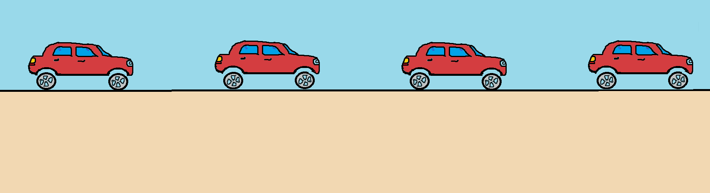
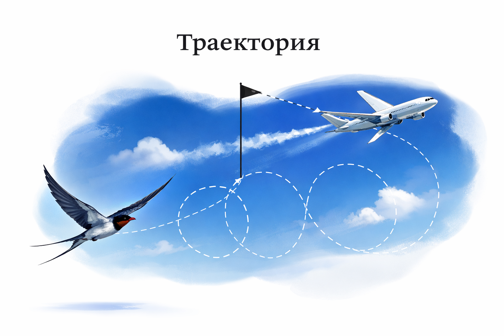

• Според вида на траекторията - праволинейни и криволинейни

Праволинейно движение

Криволинейно движение
• Според скоростта - равномерно и неравномерно
ИНТЕРАКТИВНА СИМУЛАЦИЯ
1) Използвай слайдърите
2) Наблюдавай смяната на числата
ПРИМЕР ЗА РАВНОМЕРНО ПРАВОЛИНЕЙНО ДВИЖЕНИЕ